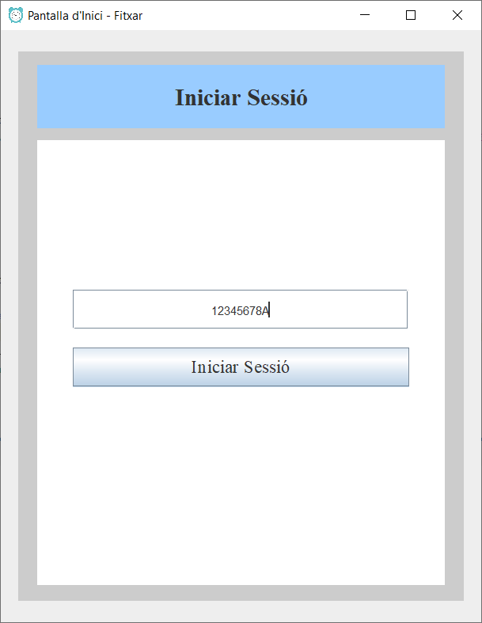
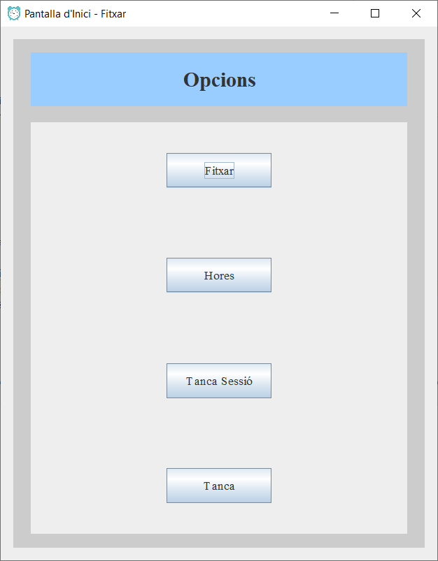
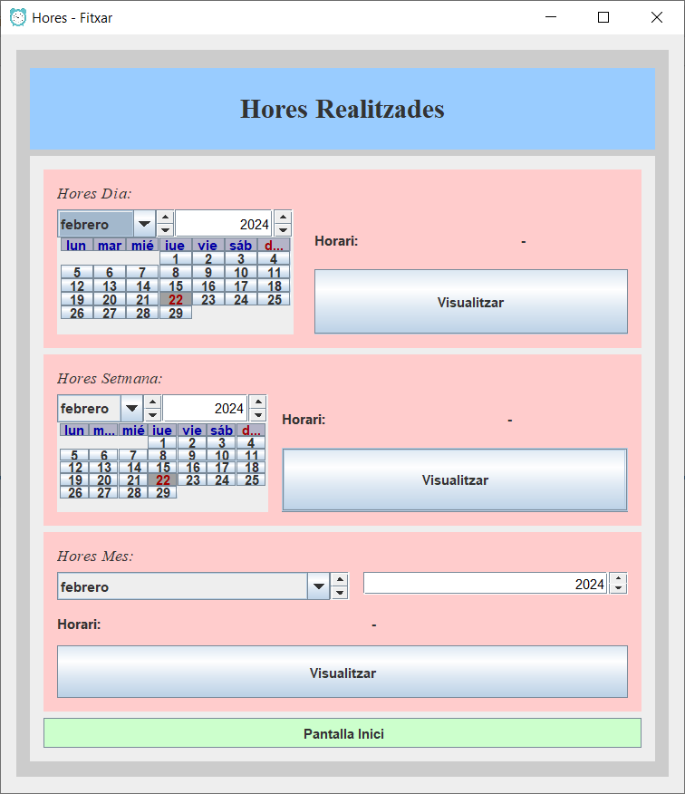

¿Qué es?
Es una aplicación de escritorio en el cual usa el lenguaje de programación Java usando interficie gráfica con JFrame.
¿Cuál es su utilidad?
Su uso sirve para que un usuario (profesor) inicie sesión correctamente, y una vez estando dentro pueda fichar la entrada y la salida; ver las horas que ha hecho según su horario y totales (hora de inicio y fin que ha fichado) de cada día, semana y mes.
¿Cómo funciona?
- Pantalla inició:
- Pantalla principal:
- Fichar:
- Horas:
- Cerrar Sesión:
- Cerrar:
- Pantalla de las horas:
- Horas diarias:
- Horas semanales:
- Horas mensuales:
El usuario (profesor) tendrá que insertar su DNI en el campo visible, luego tendrá que clicar en el botón "Iniciar Sessió", en caso de que ese profesor este en la BD podrá acceder y en caso contrario no.

En esta pantalla hay 4 botones disponibles para interactuar:
Primero le pide al usuario su horario que tiene, el cual tiene que tener de nombre "horari" y su extensión tiene que ser xlsx, en caso de que no lo haya seleccionado con anterioridad.
Luego comprueba si el usuario con el que se ha iniciado sesión ja a fichado; en caso de no ser así inserta el DNI del usuario la fecha del día actual y la fecha y hora de inicio fichar en que se dio clic en fichar, en caso contrario, que ya haya dado clic anteriormente, se insertara la fecha y hora de fin fichar y las horas realizadas según su horario que anteriormente a seleccionado.
Cuando el usuario clique, le redirigirá el usuario a una nueva ventana en la cual se podrá visualizar todo lo relacionado con las horas realizadas.
Al pulsar el botón eliminará las credenciales del usuario (el DNI guardado en un fichero txt).
Cierra por completo la aplicación, las credenciales del usuario se mantienen guardadas en el archivo.

En esta pantalla se pueden visualizar las horas que ha realizado el profesor según su horario y en qué momento ha fichado el inicio y el fin.
Las horas se dividen en 3 secciones:
Para visualizar las horas diarias se tiene que seleccionar la fecha en el calendario para poder visualizar las horas de ese día.
Para visualizar las horas semanales se tiene que seleccionar la fecha en el calendario, el cual tiene que ser un lunes o viernes, y se visualizaran las horas semanales.
Para visualizar las horas mensuales se tiene que seleccionar el mes y año que quieres del cual quieres visualizar las horas y se postrara.
